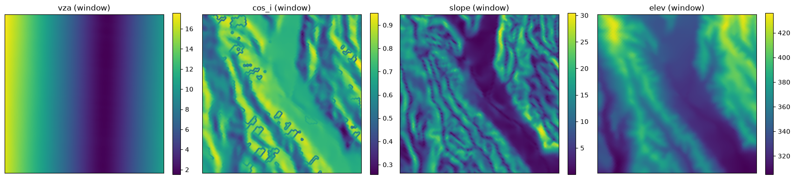
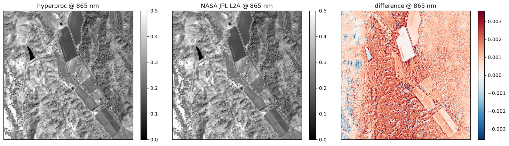
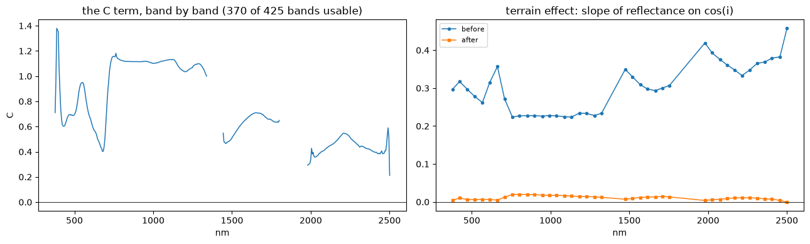
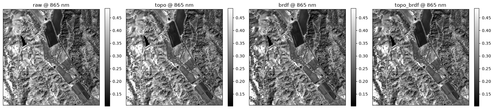
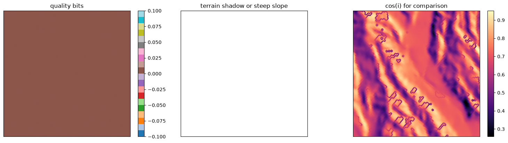
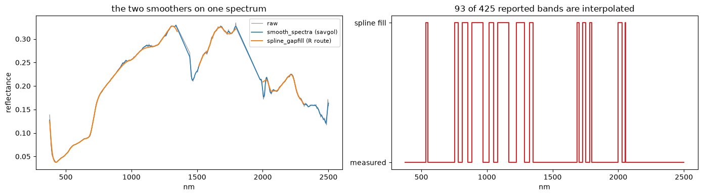
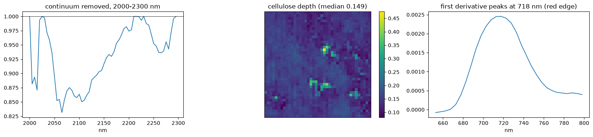
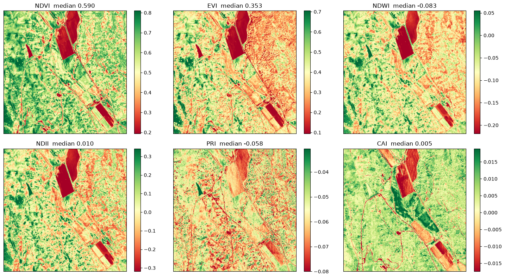
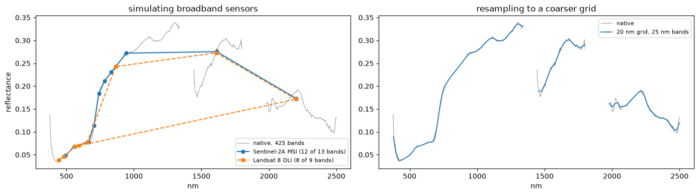

AVIRIS-NG — tutorial¶
Saved outputs available — not rerun
Download the original notebook · Source: tests/0_src_code/avirisng_tutorial.ipynb
Archived tutorial, not an automatic test
This is a read-only rendering of the existing notebook. Code was not executed for the website. Paths and saved outputs belong to the original environment. Some prose describes intent rather than the exact current implementation. Read the notebook caveats before running cells. Cells can write large files, download external data, or reuse cached results.
How to read outputs
Figures below are stored notebook outputs, not newly generated results. Text outputs are expanded by default and can be collapsed; long logs may be shortened for readability; the downloadable notebook retains the complete original output.
Airborne tutorial defaults
Inspect SAMPLE_REGION, SAMPLE_ROWS, and force_topo before use. Row-subset fitting is not full-flightline fitting. Forced correction is a demonstration, not a recommendation. Satellite topographic effects are not universally absent; that claim in historical prose is not a general scientific rule.
hyperproc, end to end on AVIRIS-NG¶
A tutorial and a test at once, for an airborne instrument. It walks the whole package on a group of AVIRIS-NG flightlines, from opening a file to writing a corrected, quality-flagged, analysis-ready product.
Every function is introduced with a table of its parameters and what each one does, so you can change the behaviour rather than copy the call.
This flight: California, 24 February 2022. 15810 x 1098 pixels at about 5 m, EPSG:32610, 425 bands, 377 to 2501 nm.
AVIRIS-NG flightlines are long and narrow - 15,810 rows by 1,098 columns - so the across-track view-angle gradient this notebook corrects runs the length of the strip. In this test set only ang20220224t210144 ships a radiance cube; the other three have reflectance only, which is why that line leads the group.
Airborne is not satellite, and the difference is the point¶
| satellite | airborne | |
|---|---|---|
| view zenith across one scene | 0.3 to 2 degrees | 34 degrees |
| pixel size | 30 m to 1.2 km | 1 to 15 m |
| terrain in a pixel | averaged away | slopes to 54 degrees |
| BRDF model | borrowed from MODIS | fitted from the flight's own angles |
| topographic correction | not applicable | the main event |
Those two columns drive everything below. A satellite sees every pixel from nearly the
same angle, so it cannot measure its own angular response and has to borrow one. This
flight sweeps 34 degrees of view zenith, which is enough to fit a
kernel model from the data itself - that is what fit_brdf does. And at metre pixels the
terrain is no longer averaged away, so the slope facing the sun is a first-order effect
and fit_topo earns its place.
The corrections, and the order they go in¶
| Stage | What it removes | Fitted from |
|---|---|---|
| Atmospheric | the atmosphere between surface and sensor | a radiative-transfer retrieval, per pixel |
| Topographic | brightness from the slope facing the sun | samples of one flightline |
| BRDF | brightness from the viewing and illumination angles | samples of the whole group |
Atmospheric first, because the geometric corrections are defined on reflectance.
Topographic before BRDF, because the terrain effect is local to a line while the BRDF fit
wants the angular spread of the whole group - and because a BRDF fitted on top of a
topographic correction sees a cleaner signal. This notebook produces both orders so you
can see the difference: _brdf alone and _topo_brdf.
Why a group of flightlines, not one¶
A single line does not span enough geometry to pin down a kernel model, and one line's
terrain may be too uniform to separate slope from view angle. So fit_topo runs per line,
fit_brdf runs on the pooled samples of 4 lines, and both report a
verdict on whether the fit is trustworthy. Read the verdicts - they are the honest
part.
The ways in¶
| You have | You run | You get |
|---|---|---|
| L1B radiance | step 3 | *_ac.tif |
| L2A | step 4 | *_topo.tif, *_brdf.tif, *_topo_brdf.tif |
a saved *_ac.tif |
step 7 | the same corrections on your own product |
What you need¶
- the AVIRIS-NG flight in
tests/data/AVIRIS_NG; - for the atmospheric correction, ISOFIT:
pip install "hyperproc[atmos]"thenhyperproc-atmos-setuponce; - no Earth Engine: airborne BRDF is fitted from the flight, not downloaded.
Budget half an hour or so, most of it the atmospheric retrieval. The fits read only the window's rows at full swath width, which is a hundred times cheaper than reading whole flightlines and keeps the angular spread the BRDF model needs - step 4.1 shows the measurement behind that choice.
This notebook is window-only. The corrections are fitted from samples of the full lines, which is cheap, but the corrected cubes are only ever written for a 500 x 500 pixel window. Writing whole flightlines would be hundreds of gigabytes and tells you nothing the window does not.
import os, sys, json, time, glob, warnings
from pathlib import Path
REPO = Path.cwd()
while not (REPO / "hyperproc").is_dir() and REPO != REPO.parent:
REPO = REPO.parent
sys.path.insert(0, str(REPO))
import numpy as np
import pandas as pd
import xarray as xr
import matplotlib.pyplot as plt
%matplotlib inline
import rasterio
import hyperproc as hp
import hyperproc.correct as hc
import dask
dask.config.set(scheduler="threads", num_workers=4) # full-swath all-band blocks are big
warnings.filterwarnings("ignore", category=RuntimeWarning)
pd.set_option("display.width", 200); pd.set_option("display.precision", 4)
print("hyperproc", hp.__version__, "from", REPO)
Step 0 — the control panel¶
| Parameter | What it controls |
|---|---|
WINDOW |
the block that gets written. The fits always use samples of the full lines |
N_LINES |
how many flightlines go into the group. Fewer is faster and fits worse |
FRACTION, MAX_PIXELS |
how much of each line sample_image draws for the fits |
SAMPLE_REGION, SAMPLE_ROWS |
how much of each flightline is read for the fits. "rows" reads a 2000-row band at full swath width, centred on the window — the default, and the setting that decides how long this notebook takes: see step 4.1 |
SAMPLE_STRATEGY |
"pixels" is the reference procedure within whatever region is read; "chunks" is about ten times faster again and approximate |
B_R, H_B |
the Li kernel's shape parameters: crown shape and height. 1.0 here |
EXPORT_FORMAT |
"GTiff" or "ENVI" |
RUN_AC, RUN_TOPO, RUN_BRDF, RUN_POST |
switch off a whole section |
# ---- what to run -----------------------------------------------------------------
RUN_AC = True
RUN_TOPO = True
RUN_BRDF = True
RUN_POST = True
EXPORT_FORMAT = "GTiff" # or "ENVI"
# ---- the group and the fits ------------------------------------------------------
N_LINES = 4
SAMPLE_REGION = "rows" # "rows" = a band of rows at FULL swath width (default);
# "window" = only the export window; "full" = the whole flightline
SAMPLE_ROWS = 2000 # rows read per line when SAMPLE_REGION="rows", centred on WINDOW
SAMPLE_STRATEGY = "pixels" # "pixels" = the reference procedure; "chunks" = ~10x faster, approximate
FRACTION = 0.1 # fraction of each line sampled for the fits
MAX_PIXELS = 200000 # cap on samples per image
B_R, H_B = 1.0, 2.0 # Li kernel crown shape and height
# ---- the window that gets written ------------------------------------------------
WINDOW = {"y": (4144, 4644), "x": (350, 850)} # NDVI 0.59, median slope 10 degrees
WORKERS = 20
DIAG_NM = 865.0
# ---- where things go -------------------------------------------------------------
DATA = REPO / "tests" / "data"
OUT = REPO / "tests" / "output" / "AVIRISNG"
OUT.mkdir(parents=True, exist_ok=True)
WORK_DIR = OUT / "02_ac" / "isofit"
os.environ["HYPERPROC_CACHE_DIR"] = str(OUT / "cache")
EXT = hp.FORMATS[EXPORT_FORMAT]
print(f"output {OUT}")
print(f"window {WINDOW} ({WINDOW['y'][1]-WINDOW['y'][0]} x {WINDOW['x'][1]-WINDOW['x'][0]} px)")
print(f"group {N_LINES} flightlines, kernels b_r={B_R} h_b={H_B}")
Saved output
One helper, and a trap worth knowing about¶
A product written from a window covers a patch somewhere inside the flightline, not the
line's top-left corner, so product[:h, :w] against line[:h, :w] compares different
ground. On the satellite notebooks the fix is to line up by coordinate. That does
not work here, and the reason is worth a paragraph.
These flightlines are flight-aligned, not north-up. The affine carries rotation terms, so easting depends on the row as well as the column:
A dataset's 1-D x and y coordinates cannot express that — they are a north-up
approximation, and selecting on them puts you hundreds of columns away from where you
meant. (On this granule the rotation is about 13 degrees, which threw a lookup 292 columns
off before this notebook was fixed.)
The honest answer here is simpler than coordinates: the window indices are exact.
process(window=WINDOW) corrects those rows and columns of the flightline's own grid, so
the product is ds.isel(y=slice(*WINDOW["y"]), x=slice(*WINDOW["x"])) — verified on this
granule to 0.13 m, a twentieth of a pixel.
| Helper | What it does |
|---|---|
window_of(ds) |
the part of a flightline the products cover, by index, which on a rotated grid is the only exact answer |
for_export(ds) |
a dataset ready to write; these flightlines are already projected, so it passes them through |
for_export leans on one package function:
hp.georeference(ds, epsg=None, resolution=None, radius=None, fill_holes=True, like=None)¶
| Parameter | Default | What it does |
|---|---|---|
epsg |
UTM zone under the scene centre | the target CRS |
resolution |
the sensor's documented pixel, else measured | output pixel size in target-CRS units |
radius |
None |
search radius when gathering swath pixels onto the grid |
fill_holes |
True |
fill single-pixel gaps left by the resampling |
like |
None |
a dataset whose exact grid to reproduce |
These flightlines arrive orthorectified, so it never fires here — it is in for_export so
the same helper works unchanged on the swath sensors in the satellite notebooks.
Four helpers for looking before you leap¶
| Call | What it gives you |
|---|---|
hp.sniff(path) |
the sensor, level, granule name and acquisition time without opening the cube |
hp.summary() |
one line per reader: the sensors the installed version can read |
hp.describe(ds, var=None) |
the band table, value ranges and layers of an opened dataset |
hp.main_var(ds) |
the name of the cube, "reflectance" or "radiance", so your code need not guess |
None of them read pixels, so all are instant on a flightline of any size.
def window_of(ds):
'''The part of a flightline the window products cover.
By index, not by coordinate: these grids are flight-aligned, so the 1-D x/y
coordinates are a north-up approximation and cannot locate a rotated pixel.
The window indices are exact, because the products are defined by them.
'''
return ds.isel(y=slice(*WINDOW["y"]), x=slice(*WINDOW["x"]))
def sample_region(ds):
'''The part of a flightline the fits are made from.
"rows" the window's rows at full swath width. View zenith varies ACROSS
track, so keeping every column preserves the angular spread the
BRDF fit needs while reading a small slice of the line.
"window" only the export window. Fastest, but on this granule it leaves
5 degrees of view zenith, below the 8 the fit requires.
"full" the whole flightline: the reference procedure, and slow.
'''
if SAMPLE_REGION == "full":
return ds
if SAMPLE_REGION == "window":
return window_of(ds)
centre = (WINDOW["y"][0] + WINDOW["y"][1]) // 2
half = SAMPLE_ROWS // 2
return ds.isel(y=slice(max(0, centre - half), min(ds.sizes["y"], centre + half)))
def for_export(ds):
'''A dataset ready to write: a swath would be projected, a grid passes through.'''
return ds if ds.attrs.get("crs") else hp.georeference(ds)
Step 1 — reading the flightline group¶
hp.open(path, sensor=None, level=None, **kwargs)¶
Works out the sensor and level from the path, finds the sibling files, and returns an
xarray.Dataset: the cube on (y, x, wavelength), wavelength and FWHM as coordinates,
and the geometry and masks as 2-D layers.
AVIRIS-NG's reader is open_aviris, and it takes:
| Parameter | Default | What it does |
|---|---|---|
product |
None |
which product the path holds. Guessed from the name; pass "rdn" or "rfl" when a folder has been renamed |
wl_range |
None |
(400, 1000) loads only part of the spectrum |
good_bands_only |
False |
drop the bands the product flags unusable rather than keeping them as NaN |
geometry |
True |
attach sun and view angles, slope, aspect, cos_i and elevation. Leave it on: the topographic fit is a regression against cos_i |
extras |
True |
attach the retrieved aerosol and water-vapour layers where the product ships them |
uncertainty |
False |
also read the posterior uncertainty cube, which doubles the read |
fix_geometry |
"auto" |
repair the observation file when its bands are out of order or mis-scaled. "auto" fixes what it can prove is wrong and says so |
sort_bands |
True |
return bands in ascending wavelength |
ortho |
True |
use the orthorectified grid. False gives the raw flight grid |
map_coords |
False |
attach 2-D map coordinate arrays as well as the 1-D axes |
chunks |
"auto" |
dask chunking. None reads eagerly |
Nothing is read here. The cubes are lazy, so opening 4 flightlines is instant.
The geometry, and why airborne is different¶
Watch two numbers below: the view-zenith spread and the slope. Together they are the reason this notebook exists.
# t210144 leads the group because it is the only line in this test set with a
# RADIANCE cube as well as reflectance, and step 3 corrects the group's first line.
STEMS = ["ang20220224t210144", "ang20220224t201928",
"ang20220224t203333", "ang20220224t204803"][:N_LINES]
l2_paths = [DATA / "AVIRIS_NG" / f"{s}_rfl_v2aa1" / f"{s}_rfl_v2aa1_img" for s in STEMS]
l1_path = DATA / "AVIRIS_NG" / f"{STEMS[0]}_rdn_v2aa1"
for p in l2_paths:
assert Path(p).exists(), f"missing: {p}"
print(f"{len(l2_paths)} L2A images in the group:")
for p in l2_paths:
print(" ", Path(p).name)
# Radiance is not always published for every line. Step 3 corrects the group's FIRST
# line, so that line must have one - which is why the group order is what it is.
have_rdn = [Path(p).name for p in [l1_path] if Path(p).exists() and
(any(Path(p).glob("*_img")) or Path(p).is_file())]
print("\nL1B radiance for the first line:", have_rdn[0] if have_rdn else "MISSING - set RUN_AC = False")
Saved output
t0 = time.time()
dss = [hp.open(p) for p in l2_paths]
print(f"opened {len(dss)} images in {time.time()-t0:.1f} s (lazy)\n")
for ds in dss:
print(f" {ds.attrs.get('stem', '?')[:44]:46s} {dict(ds.sizes)}")
ds0 = dss[0] # the image the window products come from
VAR = hp.main_var(ds0)
print(f"\nvariable {VAR}, crs {ds0.attrs.get('crs')}")
Saved output
opened 4 images in 4.2 s (lazy)
ang20220224t210144_L2A {'y': 15810, 'x': 1098, 'wavelength': 425}
ang20220224t201928_L2A {'y': 15103, 'x': 706, 'wavelength': 425}
ang20220224t203333_L2A {'y': 16066, 'x': 794, 'wavelength': 425}
ang20220224t204803_L2A {'y': 15106, 'x': 760, 'wavelength': 425}
variable reflectance, crs EPSG:32610
Saved output
sensor AVIRIS-NG L2A
granule ang20220224t210144
acquired 2022-02-24T21:01:44
grid 15810 x 1098 (ortho)
pixel 4.5 m (grid rotated -50 deg)
extent x 723458.6155 .. 781134.8610 y 3811045.2819 .. 3860561.4319 (bounding box of the rotated grid)
bands 425 377.2 - 2500.9 nm (fwhm 5.8 nm)
flagged 55 bands flagged unusable (water-vapour windows)
valid px ~77.8% of 17,359,380 (from a 4,356-px sample)
reflectan median 0.1461 p1 0.0157 p99 0.6894
print("angles and terrain on the first line:\n")
for v in ("sza", "saa", "vza", "vaa", "raa", "slope", "aspect", "cos_i", "elev"):
if v in ds0:
a = np.asarray(ds0[v].values, dtype="float64")
print(f" {v:6s} {np.nanmin(a):8.2f} .. {np.nanmax(a):8.2f} spread {np.nanmax(a)-np.nanmin(a):7.2f}")
print(f"\nview zenith spans {np.nanmax(ds0.vza.values)-np.nanmin(ds0.vza.values):.1f} degrees across this line.")
print("A satellite in this package spans 0.3 to 2. That is why the BRDF model below is fitted,")
print("not borrowed from MODIS.")
layers = [v for v in ("vza", "cos_i", "slope", "elev") if v in ds0]
fig, ax = plt.subplots(1, len(layers), figsize=(4.3 * len(layers), 4.2))
sub = ds0.isel(y=slice(*WINDOW["y"]), x=slice(*WINDOW["x"]))
for a, v in zip(np.atleast_1d(ax), layers):
im = a.imshow(sub[v].values, cmap="viridis"); a.set_title(f"{v} (window)")
a.set_xticks([]); a.set_yticks([]); plt.colorbar(im, ax=a, fraction=0.046)
plt.tight_layout(); plt.show()
Saved output

Step 2 — writing, in either format¶
hp.to_geotiff(ds, path, var=None, compress="deflate", overviews=None, overview_resampling="average")¶
| Parameter | Default | What it does |
|---|---|---|
path |
— | a .tif, or a directory, in which case the file is named after the granule |
var |
the cube | which variable to write |
compress |
"deflate" |
lossless, roughly halves the file |
overviews |
None |
True builds internal pyramids so a GIS can draw without reading at full resolution |
overview_resampling |
"average" |
right for reflectance; use "nearest" or "mode" for a flag layer |
hp.to_envi(ds, path, var=None, interleave="bil")¶
| Parameter | Default | What it does |
|---|---|---|
path |
— | an .img, or a directory. The header lands beside it as <stem>.hdr |
interleave |
"bil" |
"bil", "bip" or "bsq". BIL is the hyperspectral norm |
Why ENVI. A GeoTIFF labels a band with free text; an ENVI header states wavelength,
fwhm and bbl as numbers, so band centres, widths and the bad-band list survive.
A GeoTIFF cannot carry a bad-band list at all. On a 425 bands instrument
with real dead bands, that matters.
hp.to_raster(ds, path, format="GTiff", **kwargs)¶
Picks between the two; EXPORT_FORMAT drives the whole notebook.
hp.to_geotiff_2d(ds, path, var, overviews=None, overview_resampling="average", tags=None, format="GTiff")¶
For a single 2-D layer: an elevation model, a retrieved aerosol map, a flag band.
| Parameter | Default | What it does |
|---|---|---|
var |
— | required, the layer to write |
tags |
None |
a dict of metadata written into the file, which is how the flag layer in step 5 carries its own bit meanings |
overview_resampling |
"average" |
use "nearest" for a flag layer, where averaging would invent values |
format |
"GTiff" |
ENVI ignores overviews with a warning, having no internal pyramids |
hp.export_geometry(ds, path, layers=None, ...) and hp.bands_to_csv(ds, path)¶
The angle and terrain layers a correction consumes, one file each, and the band table as CSV. Worth writing beside any product, because the product carries no angles and step 7 needs them.
demo = ds0.isel(y=slice(WINDOW["y"][0], WINDOW["y"][0] + 60),
x=slice(WINDOW["x"][0], WINDOW["x"][0] + 60))
demo_w = for_export(demo)
t0 = time.time()
tif = hp.to_geotiff(demo_w, OUT / "01_read" / "demo.tif", overviews=True)
img = hp.to_envi(demo_w, OUT / "01_read" / "demo.img", interleave="bil")
print(f"GeoTIFF {tif.stat().st_size/1e6:6.2f} MB ENVI {img.stat().st_size/1e6:6.2f} MB"
f" ({time.time()-t0:.1f} s)")
print("\nwhat the ENVI header carries that a GeoTIFF cannot:")
for line in img.with_suffix(".hdr").read_text().splitlines():
if line.split("=")[0].strip() in ("wavelength units", "interleave", "data ignore value", "sensor"):
print(" ", line)
for kk in ("wavelength =", "fwhm =", "bbl ="):
if line.startswith(kk):
print(f" {kk:14s} {line.split('=',1)[1].strip()[:56]} ...")
hp.bands_to_csv(demo_w, OUT / "01_read" / "demo_bands.csv")
written = hp.export_geometry(demo_w, OUT / "01_read" / "geometry",
layers=("sza", "vza", "raa", "cos_i", "slope"))
print("\ngeometry layers written:", [p.name for p in written])
Saved output
Saved output
Saved output
GeoTIFF 4.97 MB ENVI 6.12 MB (0.6 s)
what the ENVI header carries that a GeoTIFF cannot:
interleave = bil
data ignore value = nan
bbl = {1, 1, 1, 1, 1, 1, 1, 1, 1, 1, 1, 1, 1, 1, 1, 1, 1, 1, 1 ...
fwhm = {5.57, 5.58, 5.58, 5.58, 5.59, 5.59, 5.59, 5.6, 5.6, 5.6 ...
sensor = AVIRIS-NG
wavelength = {377.1956495, 382.2056495, 387.2156495, 392.2256495, 397 ...
wavelength units = Nanometers
Saved output
Step 3 — from L1B radiance: atmospheric correction¶
hp.atmos.process(source, out_dir, ...)¶
One call from radiance to a finished product: the reflectance cube, the retrieved aerosol and water-vapour layers, the quality flags, a band CSV and a provenance JSON.
| Parameter | Default | What it does |
|---|---|---|
source |
— | the L1B file or folder, or an already-opened dataset |
out_dir |
— | where the products go |
work_dir |
out_dir/isofit_work/<stem> |
where ISOFIT works. A finished run here is reused, which is how you resume; delete the folder to force a redo |
stages |
("ac",) |
airborne keeps this at ("ac",): the geometric corrections need the group fits from step 4, so they are applied there, not chained here |
engine |
"sRTMnet" |
the radiative-transfer engine; "6S" and "LibRadTran" also work |
workers |
24 |
cores for the retrieval |
window |
None |
set here. A whole AVIRIS-NG flightline is far too large to retrieve for a tutorial |
layers |
("aot550", "h2o") |
which retrieved 2-D layers to write beside the cube |
uncertainty |
False |
also write the posterior uncertainty cube |
quality |
True |
write the consolidated flag layer |
format |
"GTiff" |
or "ENVI" |
overwrite |
False |
redo the retrieval even if the work directory holds one |
Anything else goes to the retrieval: atmosphere, surface, segmentation_size,
num_neighbors, aot_prior_sigma.
This is the slow step, so the cell before it checks the ISOFIT assets and fails in seconds rather than at minute forty if something is missing.
if RUN_AC:
from hyperproc.atmos import check
report = check(engines=("sRTMnet",))
print("\nISOFIT assets ready:", report["ok"])
if not report["ok"]:
print("run `hyperproc-atmos-setup` first; the lines above say what is missing")
Saved output
Saved output
hyperproc.atmos check (python 3.12.11, isofit 4.1.5)
ini /home/fujiang/.isofit/isofit.ini
gfortran /usr/bin/gfortran
make /usr/bin/make
data ok /data/fujiang/isofit_assets/data
sixs ok /data/fujiang/isofit_assets/sixs exe /data/fujiang/isofit_assets/sixs/sixsV2.1
srtmnet ok /data/fujiang/isofit_assets/srtmnet
surface ok /data/fujiang/isofit_assets/surface
everything needed is in place
ISOFIT assets ready: True
if RUN_AC:
from hyperproc.atmos import process
t0 = time.time()
ac = process(l1_path, OUT / "02_ac", work_dir=WORK_DIR, stages=("ac",),
workers=WORKERS, window=WINDOW, format=EXPORT_FORMAT,
layers=("aot550", "h2o"), overviews=True, verbose=True)
print(f"\n{(time.time()-t0)/60:.1f} min -> {Path(ac['reflectance']).name}")
print("layers :", {k: Path(v).name for k, v in ac["layers"].items()})
else:
ac = None; print("RUN_AC is False; skipped")
Saved output
Saved output
Saved output
ISOFIT inputs for ang20220224t210144 (sensor code ang, fid ang20220224t210144)
500 lines x 500 samples x 424 bands, radiance x1 -> uW/cm2/nm/sr
rdn /data/fujiang/Hyperspectral_data_processing/tests/output/AVIRISNG/02_ac/isofit/input/ang20220224t210144_rdn
loc /data/fujiang/Hyperspectral_data_processing/tests/output/AVIRISNG/02_ac/isofit/input/ang20220224t210144_loc
obs /data/fujiang/Hyperspectral_data_processing/tests/output/AVIRISNG/02_ac/isofit/input/ang20220224t210144_obs
valid pixels 100.0%; lat 34.720 lon -120.111 elev 305..436 m
sza 45.4..45.4 vza 1.5..17.6 raa 0..122 deg utc 21.135 h
running: /home/fujiang/miniconda3/envs/hsi/bin/python -m isofit apply_oe /data/fujiang/Hyperspectral_data_processing/tests/output/AVIRISNG/02_ac/isofit/input/ang20220224t210144_rdn ...
Saved output
Saved output
Saved output
Saved output
/home/fujiang/miniconda3/envs/hsi/lib/python3.12/site-packages/rioxarray/_io.py:1148: NotGeoreferencedWarning: Dataset has no geotransform, gcps, or rpcs. The identity matrix will be returned.
warnings.warn(str(rio_warning.message), type(rio_warning.message)) # type: ignore
/home/fujiang/miniconda3/envs/hsi/lib/python3.12/site-packages/rioxarray/_io.py:1148: NotGeoreferencedWarning: Dataset has no geotransform, gcps, or rpcs. The identity matrix will be returned.
warnings.warn(str(rio_warning.message), type(rio_warning.message)) # type: ignore
/home/fujiang/miniconda3/envs/hsi/lib/python3.12/site-packages/rioxarray/_io.py:1148: NotGeoreferencedWarning: Dataset has no geotransform, gcps, or rpcs. The identity matrix will be returned.
warnings.warn(str(rio_warning.message), type(rio_warning.message)) # type: ignore
/home/fujiang/miniconda3/envs/hsi/lib/python3.12/site-packages/rioxarray/_io.py:1148: NotGeoreferencedWarning: Dataset has no geotransform, gcps, or rpcs. The identity matrix will be returned.
warnings.warn(str(rio_warning.message), type(rio_warning.message)) # type: ignore
/home/fujiang/miniconda3/envs/hsi/lib/python3.12/site-packages/rioxarray/rioxarray.py:431: UserWarning: Transform that is non-rectilinear or with rotation found. Unable to recalculate.
warnings.warn(
Saved output
quality: clear 100.0%
done in 45.2 min -> /data/fujiang/Hyperspectral_data_processing/tests/output/AVIRISNG/02_ac/ang20220224t210144_L1B_ac_win4144-4644_350-850.tif
45.2 min -> ang20220224t210144_L1B_ac_win4144-4644_350-850.tif
layers : {'aot550': 'ang20220224t210144_L1B_ac_win4144-4644_350-850_aot550.tif', 'h2o': 'ang20220224t210144_L1B_ac_win4144-4644_350-850_h2o.tif'}
Saved output
if RUN_AC:
# our retrieval against the provider's own reflectance, on the same ground
with rasterio.open(ac["reflectance"]) as src:
wl_ours = np.array([float(d.split()[0]) for d in src.descriptions])
b = int(np.argmin(np.abs(wl_ours - DIAG_NM)))
ours = src.read(b + 1)
k = int(np.argmin(np.abs(ds0.wavelength.values - DIAG_NM)))
theirs = window_of(ds0)[VAR].isel(wavelength=k).values # by index: see the note above
ok = np.isfinite(ours) & np.isfinite(theirs) & (ours > 0) & (theirs > 0)
print(f"our retrieval against the NASA JPL L2A at {DIAG_NM:.0f} nm, {ok.sum():,} pixels:")
if ok.sum() > 100:
print(f" median difference {np.median(ours[ok]-theirs[ok]):+.4f}"
f" RMSE {np.sqrt(np.mean((ours[ok]-theirs[ok])**2)):.4f}"
f" r {np.corrcoef(ours[ok], theirs[ok])[0,1]:.4f}")
lim = float(np.nanpercentile(np.abs(ours - theirs), 98)) or 0.02
fig, ax = plt.subplots(1, 3, figsize=(15, 4.2))
for a, img, t, kw in ((ax[0], ours, "hyperproc", dict(cmap="gray", vmin=0, vmax=0.5)),
(ax[1], theirs, "NASA JPL L2A", dict(cmap="gray", vmin=0, vmax=0.5)),
(ax[2], ours-theirs, "difference", dict(cmap="RdBu_r", vmin=-lim, vmax=lim))):
im = a.imshow(img, **kw); a.set_title(f"{t} @ {DIAG_NM:.0f} nm"); a.set_xticks([]); a.set_yticks([])
plt.colorbar(im, ax=a, fraction=0.046)
plt.tight_layout(); plt.show()
Saved output

Step 4 — the group workflow: topographic and BRDF correction¶
This is what airborne processing actually is. Four moves:
- sample each flightline, because fitting on every pixel of 4 lines is pointless and slow;
- fit the topographic correction per line, and read its verdict;
- fit the BRDF model on the pooled group, because one line does not span enough geometry;
- apply and write the window.
4.1 Sampling¶
hc.sample_image(ds, fraction=0.1, max_pixels=None, seed=0, edge_px=30, min_blocks=4, strategy="pixels", ...)¶
| Parameter | Default | What it does |
|---|---|---|
fraction |
0.1 |
fraction of the image to draw |
max_pixels |
None |
hard cap. 200,000 here — enough to fit, small enough to hold 4 lines in memory at once |
seed |
0 |
the draw is reproducible |
edge_px |
30 |
pixels to ignore at the swath edges, where geometry and radiometry are least reliable |
min_blocks |
4 |
the image is drawn in blocks so the sample is spread over it, not clumped |
strategy |
"pixels" |
the parameter that decides how long this notebook takes. See below |
topo_calc, brdf_calc |
published dicts | the masks that decide which pixels are eligible - NDVI range, minimum slope, minimum cos_i, a cloud screen |
SAMPLE_REGION: read a slice of the line, not all of it¶
Reading every flightline in full is the reference procedure and it is slow — about six minutes per line on this data, and it dominates everything else in this notebook. It is also more than the fits need. Two measurements decide how much can safely be cut.
First: never cut columns. View zenith varies across track, so the swath width is the angular range the BRDF model is fitted on. Sampling one AVIRIS-3 line:
| region | pixels | view-zenith span | topo bands usable | angular_diversity |
|---|---|---|---|---|
| 500 x 500 (the export window) | 0.25 M | 8.8 deg | 66 | insufficient — span 5.1 deg, condition 5560 |
| 500 x 1342 (full width) | 0.67 M | 21.2 deg | 235 | ok — span 16.0 deg, condition 746 |
Cutting the swath to the export window throws away most of the angular range and the fit is refused, correctly: five degrees cannot separate the kernels.
Second: cut rows, but not to the window. Rows cost read time and buy terrain variety, which is what the topographic fit needs — it is judged by whether independent blocks of the image agree, and a short band has too few blocks to tell.
| rows read | NEON verdict | blocks | effect | time per line |
|---|---|---|---|---|
| 500 | skip — no effect found | 8 | -0.017 | 21 s |
| 2000 | inconclusive | 28 | +0.059 | 64 s |
| 4000 | inconclusive | 52 | +0.140 | 124 s |
| 10749 (full) | inconclusive | 125 | +0.072 | 362 s |
At 500 rows the topographic fit reports skip on NEON and AVIRIS-5 — not because there is
no terrain effect, but because the band is too short to demonstrate one. 2000 rows
recovers the same verdict as the whole line on every sensor tested, at a fifth of the
cost, and that is the default.
So: full swath width, a 2000-row band centred on the export window. The fit then describes that band rather than the whole flightline, which is the honest reading of its verdict, and the band contains the window the products cover.
strategy, and why sampling is the slow part¶
| Value | What it does | Cost |
|---|---|---|
"pixels" (default) |
the reference procedure: reads the whole flightline once to build every mask on every pixel, draws a random fraction of those that pass, and accumulates the topographic regression sums over all eligible pixels while reading — the exact all-pixel NNLS result without holding the cube in memory |
two passes over the cube |
"chunks" |
reads fraction of the reader's chunks, spread evenly over the grid, and keeps up to max_pixels random pixels from them. Cloud statistics and the NDVI population come only from the chunks read |
about a tenth of one pass |
This notebook keeps "pixels", the reference procedure, applied to whatever
SAMPLE_REGION selects. With the default "rows" that is fast enough that the cheaper
"chunks" is not needed; set it if you shrink nothing else and still want a quick look,
remembering that its verdicts should not be quoted.
A Sample carries the reflectance, angles and terrain of the drawn pixels, plus the masks.
s.summary() prints what it got, including whether the whole image was read.
if RUN_TOPO or RUN_BRDF:
t0 = time.time()
samples = []
for ds in dss:
s = hc.sample_image(sample_region(ds), fraction=FRACTION, max_pixels=MAX_PIXELS,
strategy=SAMPLE_STRATEGY)
samples.append(s)
print(" ", s.summary())
print(f"\nsampled {len(samples)} flightlines in {time.time()-t0:.0f} s")
Saved output
Saved output
Saved output
Saved output
4.2 The topographic correction, and its verdict¶
A slope tilted towards the sun receives more irradiance and looks brighter. SCS+C removes
that by regressing reflectance on cos_i, the cosine of the incidence angle between the
sun and the surface normal, band by band.
hc.fit_topo(sample, method="scs+c", fit="nnls", calc=..., apply_spec=..., diagnostic_bands=40, min_samples=100, block_agreement=0.7, block_min_pixels=500, block_split=2, block_t=2.0)¶
| Parameter | Default | What it does |
|---|---|---|
method |
"scs+c" |
sun-canopy-sensor with the C correction. The C term stops the correction exploding as cos_i goes to zero |
fit |
"nnls" |
non-negative least squares. This default matters: ordinary least squares can return a negative intercept, which makes C negative and the correction singular. NNLS cannot |
calc |
NDVI 0.1-1.0, slope ≥ 5°, cos_i ≥ 0.12, a cloud screen |
which pixels the regression is fitted on |
apply_spec |
same bounds without the cloud screen | which pixels the correction is applied to |
diagnostic_bands |
40 |
bands used for the verdict |
min_samples |
100 |
fewer eligible pixels than this and the fit is refused |
block_split |
2 |
the image is split into blocks and fitted separately; a correction that is real should agree between them |
block_agreement |
0.7 |
the fraction of blocks that must agree before the verdict is correct |
block_t |
2.0 |
the t-statistic a block's slope must reach to count as significant |
Read the verdict. correct means the terrain effect is present and consistent;
inconclusive means the fit could not prove it, usually because the line's terrain is too
uniform or its slopes too gentle. This notebook applies the correction anyway with
force_topo=True so you can see what it does — in production you would let the verdict
decide.
if RUN_TOPO:
t0 = time.time()
topos = [hc.fit_topo(s) for s in samples]
for t in topos:
t.to_json(OUT / "03_coefficients")
rows = []
for t in topos:
d = t.diagnostic
rows.append(dict(image=str(t.source["stem"])[:34], verdict=t.verdict,
blocks=f"{d.get('n_blocks_significant')}/{d.get('n_blocks')}",
agreement=d.get("block_agreement"),
n_fit=t.n_samples, bands_ok=t.n_ok,
median_C=float(np.nanmedian(t.c)) if np.isfinite(t.c).any() else np.nan,
effect_before=d["median_effect_before"], effect_after=d["median_effect_after"]))
display(pd.DataFrame(rows))
print(f"fitted {len(topos)} lines in {time.time()-t0:.0f} s")
print("\nverdicts:", {t.verdict for t in topos})
print("'correct' = the terrain effect is present and consistent between blocks.")
print("'inconclusive' = the fit could not prove it; this notebook forces it anyway to show the effect.")
else:
topos = None
Saved output
image verdict blocks agreement n_fit bands_ok median_C effect_before effect_after
0 ang20220224t210144_L2A correct 78/87 1.0000 909581 370 0.6768 0.2991 0.0108
1 ang20220224t201928_L2A correct 117/122 0.9658 925070 299 0.4714 0.3806 0.0074
2 ang20220224t203333_L2A correct 113/120 1.0000 978416 370 0.5876 0.3053 0.0082
3 ang20220224t204803_L2A correct 51/60 0.9608 733534 370 0.8470 0.2378 0.0061
Saved output
if RUN_TOPO:
# what the correction is actually doing, band by band, on the first line.
# The per-band numbers live in diagnostic["bands"], keyed by wavelength string,
# and only the `diagnostic_bands` sample of them is kept (40 by default).
t = topos[0]
bands = t.diagnostic["bands"]
wl_d = np.array([float(w) for w in bands])
order = np.argsort(wl_d); wl_d = wl_d[order]
take = lambda k: np.array([bands[w][k] if bands[w][k] is not None else np.nan
for w in bands], dtype="float64")[order]
eb, ea = take("effect_before"), take("effect_after")
status = np.array(t.status)
counts = {v: int((status == v).sum()) for v in sorted(set(status))}
print(f"band status over {status.size} bands: {counts}")
print(f" 'ok' bands get the correction; 'inverted' ones would darken a sunlit slope,")
print(f" so the fit refuses them and leaves those bands alone.")
fig, ax = plt.subplots(1, 2, figsize=(13, 4))
ax[0].plot(np.asarray(t.wavelength), t.c, lw=1.1)
ax[0].axhline(0, color="k", lw=0.6)
ax[0].set_xlabel("nm"); ax[0].set_ylabel("C")
ax[0].set_title(f"the C term, band by band ({t.n_ok} of {status.size} bands usable)")
ax[1].plot(wl_d, eb, "o-", ms=3, lw=1.1, label="before")
ax[1].plot(wl_d, ea, "s-", ms=3, lw=1.1, label="after")
ax[1].axhline(0, color="k", lw=0.6); ax[1].legend(fontsize=8)
ax[1].set_xlabel("nm"); ax[1].set_title("terrain effect: slope of reflectance on cos(i)")
plt.tight_layout(); plt.show()
Saved output

4.3 Can this group support a BRDF fit at all?¶
hc.angular_diversity(sza, vza, raa, mask=None, volume="ross_thick", geometric="li_dense_r", b_r=1.0, h_b=2.0, span_min_deg=8.0, cond_max=2000.0)¶
Before fitting, ask whether the geometry can support a fit. It builds the same kernel pair the model uses and reports the condition number of the design matrix.
| Parameter | Default | What it does |
|---|---|---|
span_min_deg |
8.0 |
the view-zenith span below which a fit is refused |
cond_max |
2000.0 |
the condition number above which the kernels are too collinear to separate |
b_r, h_b |
1.0, 2.0 |
Li kernel crown shape and height — 1.0 and 2.0 here |
This flight spans about 34 degrees, so expect this to pass. On a satellite it would not, which is the whole reason satellites borrow MODIS parameters.
hc.fit_brdf(samples, topo=None, calc=..., apply_spec=..., volume="ross_thick", geometric="li_dense_r", b_r=1.0, h_b=2.0, sza_ref="group", num_bins=18, ndvi_min=0.05, ndvi_max=1.0, perc_min=10, perc_max=95, second_split=True, group_id=None, force=False, force_topo=False)¶
| Parameter | Default | What it does |
|---|---|---|
samples |
— | the group's samples, pooled. One line is not enough geometry |
topo |
None |
the topographic coefficients to remove first. None fits on raw samples, which is what the _brdf product wants; passing them gives the _topo_brdf product a cleaner signal |
volume |
"ross_thick" |
the volume-scattering kernel |
geometric |
"li_dense_r" |
the geometric-optical kernel. Airborne uses the dense reciprocal form; the satellite c-factor uses the sparse one |
sza_ref |
"group" |
the solar zenith to normalise to. "group" uses the group mean, so lines flown an hour apart land on a common sun |
num_bins |
18 |
NDVI bins. The model is fitted per bin, because canopy scattering depends on how much canopy there is |
ndvi_min, ndvi_max |
0.05, 1.0 |
the NDVI range that gets a fit |
perc_min, perc_max |
10, 95 |
percentile trim inside each bin, which keeps outliers out of the regression |
second_split |
True |
split each bin again and check the two halves agree |
force |
False |
fit even when the diversity check says no |
force_topo |
False |
accept topographic coefficients whose verdict was not correct |
Two fits are made below, because the two products need different ones:
bc_plain— fitted on raw samples, for*_brdf.tif;bc_after— fitted on topographically corrected samples, for*_topo_brdf.tif.
if RUN_BRDF:
pooled = {k: np.concatenate([getattr(s, k)[s.brdf_calc_mask(
hc.pipeline.BRDF_CALC, "ross_thick", "li_dense_r", B_R, H_B)]
for s in samples]) for k in ("sza", "vza", "raa")}
div = hc.angular_diversity(pooled["sza"], pooled["vza"], pooled["raa"], b_r=B_R, h_b=H_B)
for k in ("verdict", "n", "vza_span_deg", "vza_p05_deg", "vza_p95_deg",
"sza_mean_deg", "condition_number", "reason"):
if k in div:
v = div[k]
print(f" {k:18s} {round(v, 2) if isinstance(v, float) else v}")
Saved output
if RUN_BRDF:
t0 = time.time()
bc_plain = hc.fit_brdf(samples, topo=None, b_r=B_R, h_b=H_B,
group_id=OUT.name, force_topo=True)
bc_after = hc.fit_brdf(samples, topo=topos, b_r=B_R, h_b=H_B,
group_id=OUT.name + "_after_topo", force_topo=True)
bc_plain.to_json(OUT / "03_coefficients"); bc_after.to_json(OUT / "03_coefficients")
print(bc_plain.summary())
print(f"\nfitted two BRDF models on {len(samples)} lines in {time.time()-t0:.0f} s")
print(" bc_plain -> for *_brdf.tif (fitted on raw samples)")
print(" bc_after -> for *_topo_brdf.tif (fitted after the topographic correction)")
else:
bc_plain = bc_after = None
Saved output
hc.view_dependence(samples, brdf=None, ...)¶
The check that matters: bin the samples by view zenith and report mean reflectance per bin, before and after. A working BRDF correction flattens the across-track gradient. It is reported per NDVI class, because the gradient's size depends on how much canopy there is.
if RUN_BRDF:
vd = hc.view_dependence(samples, brdf=bc_plain)
rows = []
for c in vd["classes"]:
for k, w in enumerate(vd["wavelength"]):
rows.append(dict(ndvi=f"{c['ndvi'][0]:.1f}-{c['ndvi'][1]:.1f}", n=c["n"], nm=round(w),
before=c["before"][k],
after=(c.get("after") or [np.nan] * len(vd["wavelength"]))[k]))
tab = pd.DataFrame(rows).pivot(index=["ndvi", "n"], columns="nm", values=["before", "after"])
display(tab)
print("'before' and 'after' are the across-track slope of reflectance on view zenith.")
print("Closer to zero after the correction is the result you want.")
Saved output
before after
nm 552 658 848 1649 2200 552 658 848 1649 2200
ndvi n
0.3-0.5 70218 0.1090 0.1064 0.1003 0.1152 0.1324 0.0051 0.0086 -0.0006 0.0053 0.0088
0.5-0.7 200315 0.2048 0.2016 0.2123 0.1665 0.1678 0.0002 -0.0007 0.0039 0.0005 -0.0015
0.7-0.9 90434 0.2279 0.2182 0.2141 0.1757 0.1806 -0.0029 -0.0040 -0.0005 -0.0043 -0.0055
Saved output
4.4 Applying them, and writing the window¶
hc.apply(ds, topo=None, brdf=None, block_bytes=2e8, notes=None, force_topo=False, brdf_ratio_max=5.0)¶
| Parameter | Default | What it does |
|---|---|---|
topo |
None |
the line's topographic coefficients. None skips the stage |
brdf |
None |
the group's BRDF coefficients. None skips the stage |
block_bytes |
2e8 |
how much of the cube to hold at once. Lower it if memory is tight |
notes |
None |
a dict recorded in the output's attributes — this notebook records the verdict and whether it was forced |
force_topo |
False |
apply topographic coefficients whose verdict was not correct. Used here so the effect is visible; leave it False in production |
brdf_ratio_max |
5.0 |
cap on the BRDF multiplier, so a near-zero modelled reflectance cannot produce a wild ratio |
The result is lazy. Nothing is computed until it is written.
hc.export(ds, out_dir, wavelengths=None, window=None, suffix="", compress="deflate", workers=4, overviews=None, overview_resampling="average", format="GTiff")¶
| Parameter | Default | What it does |
|---|---|---|
window |
None |
(row0, row1, col0, col1). Always set for airborne — a whole flightline is hundreds of GB |
wavelengths |
None |
write only these bands. None writes the cube |
suffix |
"" |
appended to the stem, which is how the stage products get their names |
workers |
4 |
threads for the write |
format |
"GTiff" |
or "ENVI" |
Three products come out, and the names say what is in them:
*_topo, *_brdf, *_topo_brdf.
if RUN_TOPO or RUN_BRDF:
tc0 = topos[0] if topos else None
note = {"topo_verdict": tc0.verdict, "topo_forced": tc0.verdict != "correct"} if tc0 else None
stages = {}
if RUN_TOPO:
stages["topo"] = hc.apply(ds0, topo=tc0, notes=note, force_topo=True)
if RUN_BRDF:
stages["brdf"] = hc.apply(ds0, brdf=bc_plain)
if RUN_TOPO and RUN_BRDF:
stages["topo_brdf"] = hc.apply(ds0, topo=tc0, brdf=bc_after, notes=note, force_topo=True)
win = (WINDOW["y"][0], WINDOW["y"][1], WINDOW["x"][0], WINDOW["x"][1])
stage_paths = {}
for st, cor in stages.items():
t1 = time.time()
stage_paths[st] = hc.export(cor, OUT / "04_corrected", window=win, suffix=f"_{st}",
overviews=(EXPORT_FORMAT == "GTiff"), format=EXPORT_FORMAT)
print(f" {st:10s} -> {stage_paths[st].name} "
f"({stage_paths[st].stat().st_size/1e6:.0f} MB, {time.time()-t1:.0f} s)")
Saved output
Saved output
Saved output
if RUN_TOPO or RUN_BRDF:
# raw and each stage, at one wavelength, on exactly the same ground
k = int(np.argmin(np.abs(ds0.wavelength.values - DIAG_NM)))
raw = ds0[VAR].isel(wavelength=k, y=slice(*WINDOW["y"]), x=slice(*WINDOW["x"])).values
panels = [("raw", raw)]
for st, p in stage_paths.items():
with rasterio.open(p) as src:
wl_p = np.array([float(d.split()[0]) for d in src.descriptions])
panels.append((st, src.read(int(np.argmin(np.abs(wl_p - DIAG_NM))) + 1)))
vmin, vmax = np.nanpercentile(raw[np.isfinite(raw)], [2, 98]) if np.isfinite(raw).any() else (0, 0.5)
fig, ax = plt.subplots(1, len(panels), figsize=(4.2 * len(panels), 4.4))
for a, (t, img) in zip(np.atleast_1d(ax), panels):
im = a.imshow(img, cmap="gray", vmin=vmin, vmax=vmax)
a.set_title(f"{t} @ {DIAG_NM:.0f} nm"); a.set_xticks([]); a.set_yticks([])
plt.colorbar(im, ax=a, fraction=0.046)
plt.tight_layout(); plt.show()
for t, img in panels[1:]:
d = img - raw
ok = np.isfinite(d) & np.isfinite(raw) & (raw > 0.01)
if ok.sum():
print(f" {t:10s} median change {np.median(d[ok]/raw[ok])*100:+6.2f} % "
f"p5 {np.percentile(d[ok]/raw[ok], 5)*100:+6.2f} % "
f"p95 {np.percentile(d[ok]/raw[ok], 95)*100:+6.2f} %")

Saved output
4.5 The seam check — the test only airborne can run¶
Adjacent flightlines overlap, and in the overlap the same ground was seen from two different view angles, often on different headings. That is an independent check no satellite scene can offer: if the BRDF correction is doing its job, the two lines should agree better after it than before.
hc.find_overlapping_pair(datasets, exclude_same=None)¶
Returns (i, j, area) for the pair with the largest footprint overlap, or None.
exclude_same takes a function mapping a dataset to a group key, so chunks of the same
flightline are not compared with each other — which would prove nothing.
hc.seam_check(ds_a, ds_b, cor_a, cor_b, out_dir, wavelengths=(450, 550, 650, 850, 1650, 2200), max_rows=1200, tag="seam", overviews=None)¶
Crops both lines to their overlap, before and after correction, writes the four crops and reports agreement per wavelength: median absolute relative difference, the p90, the ratio and the correlation.
Lower median_abs_rel_diff after correction is the result you want.
if (RUN_TOPO or RUN_BRDF) and len(dss) > 1:
t0 = time.time()
line_of = (lambda d: str(d.attrs.get("stem", ""))[:18]) if len(dss) > N_LINES else None
pair = hc.find_overlapping_pair(dss, exclude_same=line_of)
if pair is None:
print("no two images in this group overlap; skipping the seam check")
seam = None
else:
i, j, area = pair
print(f"largest overlap: {dss[i].attrs.get('stem')} <-> {dss[j].attrs.get('stem')}"
f" ({area/1e6:.1f} km2, found in {time.time()-t0:.0f} s)")
fin = lambda k: hc.apply(dss[k], topo=topos[k] if RUN_TOPO else None,
brdf=bc_after if RUN_BRDF else None, force_topo=True)
seam = hc.seam_check(dss[i], dss[j], fin(i), fin(j), OUT / "05_seam",
tag=f"{OUT.name}_seam", overviews=False)
Saved output
Saved output
Saved output
Saved output
Saved output
if (RUN_TOPO or RUN_BRDF) and len(dss) > 1 and seam:
rows = []
for label in ("raw", "corrected"):
ag = seam[label]["agreement"]
if ag.get("n", 0) < 100:
continue
for k, w in enumerate(ag["wavelength"]):
rows.append(dict(nm=round(w), stage=label, n=ag["n"],
median_abs_rel_diff=ag["median_abs_rel_diff"][k],
p90_abs_rel_diff=ag["p90_abs_rel_diff"][k],
ratio_a_over_b=ag["median_ratio"][k], r=ag["correlation"][k]))
if rows:
tab = pd.DataFrame(rows).pivot(index="nm", columns="stage",
values=["median_abs_rel_diff", "p90_abs_rel_diff", "r"])
display(tab)
b = tab["median_abs_rel_diff"]
if "raw" in b and "corrected" in b:
imp = (b["raw"] - b["corrected"]) / b["raw"] * 100
print("improvement in cross-line agreement, per wavelength (%):")
print(" " + " ".join(f"{int(w)}nm {v:+.1f}" for w, v in imp.items()))
else:
print("too few overlapping pixels to report agreement")
Saved output
median_abs_rel_diff p90_abs_rel_diff r
stage corrected raw corrected raw corrected raw
nm
452 0.0976 0.1503 0.3280 0.4106 0.8134 0.8331
552 0.1025 0.1690 0.3442 0.4602 0.7949 0.8187
648 0.1170 0.2023 0.4436 0.5945 0.8039 0.8256
848 0.1353 0.1355 0.3959 0.4895 0.7906 0.8137
1649 0.1123 0.1629 0.4407 0.5398 0.7849 0.8139
2200 0.1301 0.1903 0.5243 0.6435 0.8091 0.8332
Saved output
Step 5 — the quality layer¶
Every provider names its masks differently. One layer with documented bits makes masking
the same call whatever the instrument — and on airborne data two of the derived flags earn
their keep that the satellites could not use: terrain_shadow and steep_terrain, both of
which need the per-pixel terrain this sensor carries.
hp.quality_flags(ds, var=None, derive=("fill", "terrain_shadow"), negative_fraction=0.1, slope_max=45.0, zhai=False, sources=True, verbose=False)¶
| Parameter | Default | What it does |
|---|---|---|
derive |
("fill", "terrain_shadow") |
flags to compute rather than read. "terrain_shadow" needs cos_i, "steep_terrain" needs slope — this sensor has both, with slopes to 54 degrees |
negative_fraction |
0.1 |
fraction of usable bands below zero before negative_reflectance is set |
slope_max |
45.0 |
degrees above which steep_terrain is set |
zhai |
False |
also run a spectral cloud index. Off by default when the provider ships a mask |
sources |
True |
read the provider's own layers as well |
hp.quality_apply(ds, quality=None, drop=("fill","cloud","cloud_shadow","cirrus"), var=None, keep=True, derive=("fill",))¶
Sets the cube to NaN wherever a dropped flag is set.
hp.quality_decode(quality, *names) and hp.quality_table(quality)¶
A boolean for any combination of flags, and the bit table with the share of pixels carrying each.
win_ds = ds0.isel(y=slice(*WINDOW["y"]), x=slice(*WINDOW["x"]))
q = hp.quality_flags(win_ds, derive=("fill", "terrain_shadow", "steep_terrain"), slope_max=45.0)
print(hp.quality_table(q))
Saved output
bit flag share meaning
--- -------------------- ------- ----------------------------------------------
0 fill 0.00 % no observation (off-swath, nodata, navigation failure)
1 saturated 0.00 % a band is at the detector rail
2 cloud 0.00 % opaque cloud
3 cloud_shadow 0.00 % shadow cast by cloud
4 cirrus 0.00 % thin or high cloud
5 snow_ice 0.00 % snow or ice
6 water 0.00 % inland or ocean water
7 haze 0.00 % aerosol haze flagged by the provider
8 sun_glint 0.00 % specular reflection geometry
9 terrain_shadow 0.00 % not illuminated by the direct beam (cos i <= 0)
10 steep_terrain 0.00 % slope beyond what a topographic correction holds
11 ac_failed 0.00 % atmospheric correction did not converge
12 brdf_filled 0.00 % BRDF c-factor not taken from MODIS at this pixel
13 negative_reflectance 0.00 % many good bands below zero after correction
clear (no flag) 100.00 %
clear = hp.quality_apply(win_ds, q, drop=("fill", "cloud", "cloud_shadow", "cirrus"))
kept = np.isfinite(clear[VAR].isel(wavelength=win_ds.sizes["wavelength"] // 2).values).mean()
print(f"after masking cloud, shadow, cirrus and fill: {kept*100:.1f} % of the window still carries data")
qds = xr.Dataset({"quality": q}, attrs=dict(win_ds.attrs))
hp.to_geotiff_2d(for_export(qds), OUT / "06_quality" / f"quality{EXT}", var="quality",
format=EXPORT_FORMAT, overview_resampling="nearest",
tags={"flag_bits": q.attrs["flag_bits"], "flag_meanings": q.attrs["flag_meanings"]})
fig, ax = plt.subplots(1, 3, figsize=(15, 4.2))
im = ax[0].imshow(q.values, cmap="tab20"); ax[0].set_title("quality bits")
plt.colorbar(im, ax=ax[0], fraction=0.046)
ax[1].imshow(hp.quality_decode(q, "terrain_shadow", "steep_terrain").values, cmap="gray_r")
ax[1].set_title("terrain shadow or steep slope")
im = ax[2].imshow(win_ds.cos_i.values, cmap="magma"); ax[2].set_title("cos(i) for comparison")
plt.colorbar(im, ax=ax[2], fraction=0.046)
for a in ax: a.set_xticks([]); a.set_yticks([])
plt.tight_layout(); plt.show()
Saved output

Step 6 — post-processing¶
Everything here takes a corrected cube and either transforms it, a cube in and a cube out,
in hyperproc.spectral, or reduces it to a map, in hyperproc.features.
6.1 Two smoothers, with opposite contracts¶
hp.smooth_spectra(ds, var=None, window=5, order=2, method="savgol", good_only=True)¶
| Parameter | Default | What it does |
|---|---|---|
window |
5 |
filter length in bands; odd, greater than order |
order |
2 |
polynomial order of the local fit |
method |
"savgol" |
Savitzky-Golay, which keeps peak shape, or "moving" for a running mean |
good_only |
True |
smooth only within runs of usable bands, so the filter never reaches across a water-vapour gap |
Cosmetic: it cannot invent a value and preserves the NaN pattern exactly.
hp.spline_gapfill(ds, var=None, df=60, threshold=0.018, despike=True, exclude=..., mask_after=..., min_points=20, keep_fill_flag=True)¶
The opposite, on purpose: despike, blank the artefact regions, fit a smoothing spline through what survives and evaluate it everywhere, then blank the deep water absorptions.
| Parameter | Default | What it does |
|---|---|---|
df |
60 |
degrees of freedom; higher follows the spectrum more closely |
threshold |
0.018 |
how far a spike must rise above its neighbours |
exclude |
13 windows | blanked before the fit, so the spline interpolates across them |
mask_after |
3 windows | blanked after, so what it discards was interpolated anyway |
min_points |
20 |
a spectrum with fewer surviving bands stays NaN |
keep_fill_flag |
True |
attach spline_filled, marking which reported bands are interpolation |
Because it invents values, the flag matters. Fit narrow features on the unsmoothed cube.
if RUN_POST:
cy, cx = win_ds.sizes["y"] // 2, win_ds.sizes["x"] // 2
patch = win_ds.isel(y=slice(cy - 20, cy + 20), x=slice(cx - 20, cx + 20)).compute()
sg = hp.smooth_spectra(patch, window=7, order=2, method="savgol", good_only=True)
sp = hp.spline_gapfill(patch, df=60, threshold=0.018, despike=True)
wl = patch.wavelength.values
good = (patch.good_wavelength.values.astype(bool) if "good_wavelength" in patch.coords
else np.ones(wl.size, bool))
y, x = 20, 20
fig, ax = plt.subplots(1, 2, figsize=(14, 4))
ax[0].plot(wl[good], patch[VAR].isel(y=y, x=x).values[good], color="0.6", lw=0.9, label="raw")
ax[0].plot(wl[good], sg[VAR].isel(y=y, x=x).values[good], lw=1.2, label="smooth_spectra (savgol)")
ax[0].plot(wl, sp[VAR].isel(y=y, x=x).values, lw=1.4, label="spline_gapfill (R route)")
ax[0].legend(fontsize=8); ax[0].set_xlabel("nm"); ax[0].set_ylabel("reflectance")
ax[0].set_title("the two smoothers on one spectrum")
filled = sp["spline_filled"].isel(y=y, x=x).values
ax[1].plot(wl, filled.astype(int), drawstyle="steps-mid", color="tab:red")
ax[1].set_yticks([0, 1]); ax[1].set_yticklabels(["measured", "spline fill"])
ax[1].set_xlabel("nm"); ax[1].set_title(f"{filled.sum()} of {wl.size} reported bands are interpolated")
plt.tight_layout(); plt.show()

6.2 Continuum removal, derivatives and absorption depth¶
hp.continuum_removal(ds, var=None, window=None, good_only=True)¶
Divides each spectrum by its upper convex hull, separating an absorption's shape from the
brightness under it. window=(2000, 2300) restricts the hull to a feature.
hp.spectral_derivative(ds, var=None, order=1, window=7, poly=2, good_only=True)¶
| Parameter | Default | What it does |
|---|---|---|
order |
1 |
1 for the first derivative, 2 for the second |
window, poly |
7, 2 |
the local fit. Differentiating raw reflectance amplifies noise, so it comes from a fit |
hp.band_depth(ds, feature, var=None, good_only=True)¶
feature is a name ("chlorophyll", "water_970", "water_1200", "lignin_1730",
"cellulose", "clay_2200") or a (lo, hi) window in nm. Returns depth, position
and area, measured against the feature's own shoulders.
These instruments cover the full 380-2500 nm range, so every feature is reachable.
if RUN_POST:
cr = hp.continuum_removal(patch, window=(2000, 2300))
bd = hp.band_depth(patch, "cellulose")
d1 = hp.spectral_derivative(patch, order=1, window=7, poly=2)
wl = patch.wavelength.values
inside = (wl >= 2000) & (wl <= 2300)
fig, ax = plt.subplots(1, 3, figsize=(16, 3.8))
ax[0].plot(wl[inside], cr[VAR].isel(y=20, x=20).values[inside], lw=1.3)
ax[0].axhline(1, color="k", lw=0.6); ax[0].set_title("continuum removed, 2000-2300 nm")
ax[0].set_xlabel("nm")
im = ax[1].imshow(bd["depth"].values, cmap="viridis"); plt.colorbar(im, ax=ax[1], fraction=0.046)
ax[1].set_title(f"cellulose depth (median {np.nanmedian(bd['depth'].values):.3f})")
ax[1].set_xticks([]); ax[1].set_yticks([])
prof = np.nanmedian(d1[VAR].values.reshape(-1, wl.size), axis=0)
vis = (wl > 650) & (wl < 800)
if vis.sum() > 3:
ax[2].plot(wl[vis], prof[vis], lw=1.3)
ax[2].set_title(f"first derivative peaks at {wl[vis][np.nanargmax(prof[vis])]:.0f} nm (red edge)")
ax[2].set_xlabel("nm")
plt.tight_layout(); plt.show()

6.3 Spectral indices¶
hp.spectral_index(ds, formula, var=None, tolerance=20.0, good_only=True, name=None)¶
| Parameter | Default | What it does |
|---|---|---|
formula |
— | a registry name ("NDVI"), or an expression where R<wavelength> means the band nearest that wavelength in nm |
tolerance |
20.0 |
how far the nearest band may sit from the one asked for before the call fails |
good_only |
True |
ignore bands flagged unusable |
name |
the index name | what to call the result |
Indices are addressed by wavelength, never band number, so one call runs unchanged on a 224-band Classic line and a 426-band NEON line.
hp.describe_indices(ds=None, tolerance=20.0)¶
The twelve built-in indices with formulas and citations, and which a given sensor can compute. These instruments can compute all twelve.
Saved output
index status formula reference
------- ---------- ---------------------------------------------------------- ------------------------
NDVI available (R860 - R660) / (R860 + R660) Rouse et al. 1974
EVI available 2.5 * (R860 - R660) / (R860 + 6*R660 - 7.5*R480 + 1) Huete et al. 2002
NDWI available (R860 - R1240) / (R860 + R1240) Gao 1996
NDII available (R820 - R1650) / (R820 + R1650) Hunt and Rock 1989
PRI available (R531 - R570) / (R531 + R570) Gamon et al. 1992
NDNI available (log(1/R1510) - log(1/R1680)) / (log(1/R1510) + log(1/R1680)) Serrano et al. 2002
CAI available 0.5 * (R2020 + R2220) - R2100 Nagler et al. 2003
MCARI available ((R700 - R670) - 0.2 * (R700 - R550)) * (R700 / R670) Daughtry et al. 2000
ARI1 available 1/R550 - 1/R700 Gitelson et al. 2001
CRI1 available 1/R510 - 1/R550 Gitelson et al. 2002
PSRI available (R680 - R500) / R750 Merzlyak et al. 1999
NDSI available (R550 - R1640) / (R550 + R1640) Hall et al. 1995
if RUN_POST:
names = ["NDVI", "EVI", "NDWI", "NDII", "PRI", "CAI"]
fig, ax = plt.subplots(2, 3, figsize=(15, 8))
for a, n in zip(ax.ravel(), names):
v = hp.spectral_index(win_ds, n).values
im = a.imshow(v, cmap="RdYlGn", vmin=np.nanpercentile(v, 2), vmax=np.nanpercentile(v, 98))
a.set_title(f"{n} median {np.nanmedian(v):.3f}"); a.set_xticks([]); a.set_yticks([])
plt.colorbar(im, ax=a, fraction=0.046)
plt.tight_layout(); plt.show()
custom = hp.spectral_index(win_ds, "(R800 - R670) / (R800 + R670)", name="my_ndvi")
print("your own formula:", custom.attrs["formula"])
print("bands it used :", custom.attrs["bands_used"])

Saved output
6.4 Resampling to another instrument¶
hp.resample(data, ...)¶
One matrix, so a whole scene moves in seconds. Name the target one of four ways:
step/fwhm/wl_range for a regular grid, wavelengths/fwhm for explicit bands,
like=other_ds to match another dataset, or sensor="SENTINEL2A" for a real instrument's
measured response.
| Parameter | Default | What it does |
|---|---|---|
method |
None |
None uses a sensor= target's measured response, else "gaussian". "box", "linear", "cubic", "nearest" also exist |
min_coverage |
0.5 |
a target band with less of its response inside the source range comes back NaN instead of being renormalised |
allow_sharpening |
False |
asking for bands narrower than the source is refused |
good_only |
True |
exclude flagged bands from the convolution and the coverage |
return_coverage |
False |
also return the per-band coverage fraction |
Simulating a broadband sensor from an airborne line is the usual reason to do this: it is how you compare a flight against Landsat or Sentinel-2 over the same ground.
srf.available() and srf.fetch(sensor, cache=None, overwrite=False, verbose=True)¶
| Call | What it does |
|---|---|
srf.available() |
the response functions the package knows, which are cached, and where each came from |
srf.fetch(sensor) |
downloads and caches one, returning its band names, centres, widths and the measured curve |
Sentinel-2 comes from ESA and Landsat 4 through 9 from the USGS. PlanetScope is listed as
nominal, meaning published band edges rather than a measured curve, and the entry says
so rather than letting you assume otherwise. overwrite=True re-downloads.
Saved output
sensor kind bands cached source
-------------- --------- ----- ------- ----------------------------------------
SENTINEL2A measured 13 yes ESA
SENTINEL2B measured - no ESA
LANDSAT4 measured - no USGS
LANDSAT5 measured - no USGS
LANDSAT7 measured - no USGS
LANDSAT8 measured 9 yes USGS
LANDSAT9 measured - no USGS
PLANETSCOPE4 nominal 4 n/a Planet (band edges only)
PLANETSCOPE8 nominal 8 n/a Planet (band edges only)
if RUN_POST:
h = min(50, patch.sizes["y"] // 2, patch.sizes["x"] // 2)
p2 = win_ds.isel(y=slice(cy - h, cy + h), x=slice(cx - h, cx + h)).compute()
raw = np.asarray(p2[VAR].values[h // 2, h // 2], dtype="float64").copy()
if "good_wavelength" in p2.coords:
raw[~p2.good_wavelength.values.astype(bool)] = np.nan
wl2 = p2.wavelength.values
fig, ax = plt.subplots(1, 2, figsize=(14, 4))
ax[0].plot(wl2, raw, color="0.6", lw=0.8, label=f"native, {wl2.size} bands")
for sensor, style in (("SENTINEL2A", "o-"), ("LANDSAT8", "s--")):
try:
out = hp.resample(p2, sensor=sensor)
got = srf.fetch(sensor, verbose=False)
keep = np.isfinite(out[VAR].values[h // 2, h // 2])
ax[0].plot(out.wavelength.values[keep], out[VAR].values[h // 2, h // 2][keep], style,
ms=5, label=f"{got['label']} ({keep.sum()} of {len(got['bands'])} bands)")
print(f"{got['label']:18s} dropped for low coverage: "
f"{[b for b, kk in zip(got['bands'], keep) if not kk]}")
except ValueError as exc:
print(f"{sensor}: {str(exc)[:110]}")
ax[0].legend(fontsize=8); ax[0].set_xlabel("nm"); ax[0].set_ylabel("reflectance")
ax[0].set_title("simulating broadband sensors")
grid = hp.resample(p2, step=20, fwhm=25)
ax[1].plot(wl2, raw, color="0.6", lw=0.8, label="native")
ax[1].plot(grid.wavelength.values, grid[VAR].values[h // 2, h // 2], lw=1.3,
label="20 nm grid, 25 nm bands")
ax[1].legend(fontsize=8); ax[1].set_xlabel("nm"); ax[1].set_title("resampling to a coarser grid")
plt.tight_layout(); plt.show()
try:
hp.resample(p2, step=2, fwhm=2)
except ValueError as exc:
print("\nasking for 2 nm bands from a coarser instrument is refused:")
print(" ", str(exc)[:150], "...")
Saved output

Saved output
Step 7 — you already have *_ac.tif. Going on from there.¶
The retrieval ran days ago, the product is on disk, and you now want it topographically and BRDF corrected without redoing an hour of ISOFIT.
Two things stand in the way, and both are worth understanding rather than working around.
hp.open will not read a product back. The readers identify granules by the
provider's naming, and a file this package wrote is not one. So a product is read with
rasterio, and the wavelengths come from the band descriptions in a GeoTIFF or from the
wavelength field in an ENVI header — one concrete reason to prefer ENVI for intermediates.
The product carries no angles or terrain. process writes the reflectance cube, the
retrieved layers and the quality flags, but not cos_i, slope, sza, vza or raa —
and both corrections need them. Either re-open the source flightline, which is on the same
grid, or write them at correction time with hp.export_geometry as step 2 did.
One caveat, stated plainly. The coefficients applied below were fitted on the provider's reflectance, not on our own retrieval. The two agree closely (step 3 measured it), and the coefficients describe the surface and geometry rather than the radiometry, so transferring them is reasonable. It is not the same as refitting on your own product, which would mean running the atmospheric correction on all 4 lines.
def load_product(path, geometry_from=None, var="reflectance", bands=None):
'''Read a product this package wrote back into a dataset the corrections accept.
path a *_ac.tif or *_ac.img written by process() or hc.export()
geometry_from an opened flightline on the same grid, to take the angles and
terrain from. None returns the cube alone, which is enough for
the spectral tools but not for a correction.
bands None reads every band; a list of 0-based indices reads only those.
'''
with rasterio.open(path) as src:
envi = src.tags(ns="ENVI")
if "wavelength" in envi: # ENVI states them as numbers
wl = np.array([float(v) for v in envi["wavelength"].strip("{}").split(",")])
else: # GeoTIFF: parse the band labels
wl = np.array([float(d.split()[0]) for d in src.descriptions])
idx = list(range(src.count)) if bands is None else list(bands)
cube = src.read([i + 1 for i in idx]).astype("float32")
wl = wl[idx]
tr, crs = src.transform, str(src.crs)
ny, nx = src.height, src.width
ds = xr.Dataset(
{var: (("y", "x", "wavelength"), np.moveaxis(cube, 0, -1))},
coords={"wavelength": wl,
"x": tr.c + (np.arange(nx) + 0.5) * tr.a,
"y": tr.f + (np.arange(ny) + 0.5) * tr.e},
attrs={"crs": crs, "transform": tuple(tr.to_gdal()), "sensor": "AVIRISNG",
"stem": Path(path).stem, "units": "1"})
if geometry_from is not None:
# `geometry_from` is already the matching window of the flightline - pass
# window_of(ds0), not the whole line. Index, not coordinate: rotated grid.
for layer in ("sza", "saa", "vza", "vaa", "raa", "slope", "aspect", "cos_i", "elev"):
if layer in geometry_from:
a = np.asarray(geometry_from[layer].values, dtype="float32")[:ny, :nx]
if a.shape == (ny, nx):
ds[layer] = (("y", "x"), a)
return ds
if RUN_AC:
try:
hp.open(ac["reflectance"])
except ValueError as exc:
print("hp.open on a product:", str(exc)[:96], "...")
Saved output
if RUN_AC and (RUN_TOPO or RUN_BRDF):
saved = load_product(ac["reflectance"], geometry_from=window_of(ds0))
print(f"loaded {Path(ac['reflectance']).name}")
print(f" {dict(saved.sizes)} {saved.wavelength.values.min():.0f}-{saved.wavelength.values.max():.0f} nm")
print(f" attached: {[v for v in ('sza','vza','raa','cos_i','slope') if v in saved]}")
corrected = hc.apply(saved, topo=topos[0] if RUN_TOPO else None,
brdf=bc_after if RUN_BRDF else None,
notes={"coefficients": "fitted on the provider reflectance group"},
force_topo=True)
p = hp.to_raster(corrected, OUT / "07_from_saved_ac" /
f"{Path(ac['reflectance']).stem}_topo_brdf{EXT}",
format=EXPORT_FORMAT,
**({"overviews": True} if EXPORT_FORMAT == "GTiff" else {}))
print(f"\nwrote {p.name} ({p.stat().st_size/1e6:.0f} MB)")
k = int(np.argmin(np.abs(saved.wavelength.values - DIAG_NM)))
before = saved.reflectance.isel(wavelength=k).values
after = corrected.reflectance.isel(wavelength=k).values
ok = np.isfinite(before) & np.isfinite(after) & (before > 0.01)
print(f"median change at {DIAG_NM:.0f} nm on our own product: "
f"{np.median((after[ok]-before[ok])/before[ok])*100:+.2f} %")
Saved output
Saved output
What this notebook exercised¶
exercised = {
"reading": ["hp.open", "hp.sniff", "hp.describe", "hp.main_var"],
"export": ["hp.to_geotiff", "hp.to_envi", "hp.to_raster", "hp.to_geotiff_2d",
"hp.bands_to_csv", "hp.export_geometry", "hc.export"],
"atmospheric": ["hp.atmos.check", "hp.atmos.process"],
"correction": ["hc.sample_image", "hc.fit_topo",
"hc.angular_diversity", "hc.fit_brdf", "hc.apply", "hc.view_dependence",
"hc.find_overlapping_pair", "hc.seam_check", "hc.load"],
"quality": ["hp.quality_flags", "hp.quality_table", "hp.quality_apply", "hp.quality_decode"],
"spectral": ["hp.smooth_spectra", "hp.spline_gapfill", "hp.continuum_removal",
"hp.spectral_derivative", "hp.resample", "srf.available", "srf.fetch"],
"features": ["hp.spectral_index", "hp.describe_indices", "hp.band_depth"],
}
print(f"{sum(len(v) for v in exercised.values())} entry points across {len(exercised)} areas:\n")
for area, fns in exercised.items():
print(f" {area:14s} {', '.join(fns)}")
print(f"\nproducts written under {OUT}:")
for p in sorted(OUT.rglob("*")):
if p.is_file() and p.suffix in (".tif", ".img", ".hdr", ".csv", ".json") and "isofit" not in str(p):
print(f" {p.relative_to(OUT)} ({p.stat().st_size/1e6:.1f} MB)")
Saved output
36 entry points across 7 areas:
reading hp.open, hp.sniff, hp.describe, hp.main_var
export hp.to_geotiff, hp.to_envi, hp.to_raster, hp.to_geotiff_2d, hp.bands_to_csv, hp.export_geometry, hc.export
atmospheric hp.atmos.check, hp.atmos.process
correction hc.sample_image, hc.fit_topo, hc.angular_diversity, hc.fit_brdf, hc.apply, hc.view_dependence, hc.find_overlapping_pair, hc.seam_check, hc.load
quality hp.quality_flags, hp.quality_table, hp.quality_apply, hp.quality_decode
spectral hp.smooth_spectra, hp.spline_gapfill, hp.continuum_removal, hp.spectral_derivative, hp.resample, srf.available, srf.fetch
features hp.spectral_index, hp.describe_indices, hp.band_depth
products written under /data/fujiang/Hyperspectral_data_processing/tests/output/AVIRISNG:
01_read/demo.hdr (0.0 MB)
01_read/demo.img (6.1 MB)
01_read/demo.tif (5.0 MB)
01_read/demo_bands.csv (0.0 MB)
01_read/geometry/ang20220224t201928_L2A_cos_i.tif (0.0 MB)
01_read/geometry/ang20220224t201928_L2A_raa.tif (0.0 MB)
01_read/geometry/ang20220224t201928_L2A_slope.tif (0.0 MB)
01_read/geometry/ang20220224t201928_L2A_sza.tif (0.0 MB)
01_read/geometry/ang20220224t201928_L2A_vza.tif (0.0 MB)
01_read/geometry/ang20220224t210144_L2A_cos_i.tif (0.0 MB)
01_read/geometry/ang20220224t210144_L2A_raa.tif (0.0 MB)
01_read/geometry/ang20220224t210144_L2A_slope.tif (0.0 MB)
01_read/geometry/ang20220224t210144_L2A_sza.tif (0.0 MB)
01_read/geometry/ang20220224t210144_L2A_vza.tif (0.0 MB)
02_ac/ang20220224t210144_L1B_ac_win4144-4644_350-850.tif (331.6 MB)
02_ac/ang20220224t210144_L1B_ac_win4144-4644_350-850_aot550.tif (0.9 MB)
02_ac/ang20220224t210144_L1B_ac_win4144-4644_350-850_bands.csv (0.0 MB)
02_ac/ang20220224t210144_L1B_ac_win4144-4644_350-850_h2o.tif (0.8 MB)
02_ac/ang20220224t210144_L1B_ac_win4144-4644_350-850_provenance.json (0.0 MB)
02_ac/ang20220224t210144_L1B_ac_win4144-4644_350-850_quality.tif (0.0 MB)
03_coefficients/AVIRISNG_after_topo_brdf_coeffs.json (0.9 MB)
03_coefficients/AVIRISNG_brdf_coeffs.json (0.9 MB)
03_coefficients/ang20220224t201928_L2A_topo_coeffs.json (0.1 MB)
03_coefficients/ang20220224t203333_L2A_topo_coeffs.json (0.1 MB)
03_coefficients/ang20220224t204803_L2A_topo_coeffs.json (0.1 MB)
03_coefficients/ang20220224t210144_L2A_topo_coeffs.json (0.1 MB)
04_corrected/ang20220224t201928_L2A_brdf_brdf.tif (192.3 MB)
04_corrected/ang20220224t201928_L2A_brdf_brdf_bands.csv (0.0 MB)
04_corrected/ang20220224t201928_L2A_brdf_brdf_provenance.json (0.0 MB)
04_corrected/ang20220224t201928_L2A_topo_brdf_topo_brdf.tif (192.2 MB)
04_corrected/ang20220224t201928_L2A_topo_brdf_topo_brdf_bands.csv (0.0 MB)
04_corrected/ang20220224t201928_L2A_topo_brdf_topo_brdf_provenance.json (0.0 MB)
04_corrected/ang20220224t201928_L2A_topo_topo.tif (192.2 MB)
04_corrected/ang20220224t201928_L2A_topo_topo_bands.csv (0.0 MB)
04_corrected/ang20220224t201928_L2A_topo_topo_provenance.json (0.0 MB)
04_corrected/ang20220224t210144_L2A_brdf_brdf.tif (364.7 MB)
04_corrected/ang20220224t210144_L2A_brdf_brdf_bands.csv (0.0 MB)
04_corrected/ang20220224t210144_L2A_brdf_brdf_provenance.json (0.0 MB)
04_corrected/ang20220224t210144_L2A_topo_brdf_topo_brdf.tif (364.5 MB)
04_corrected/ang20220224t210144_L2A_topo_brdf_topo_brdf_bands.csv (0.0 MB)
04_corrected/ang20220224t210144_L2A_topo_brdf_topo_brdf_provenance.json (0.0 MB)
04_corrected/ang20220224t210144_L2A_topo_topo.tif (364.1 MB)
04_corrected/ang20220224t210144_L2A_topo_topo_bands.csv (0.0 MB)
04_corrected/ang20220224t210144_L2A_topo_topo_provenance.json (0.0 MB)
05_seam/AVIRISNG_seam_corrected_mosaic.tif (32.4 MB)
05_seam/AVIRISNG_seam_raw_mosaic.tif (32.4 MB)
05_seam/ang20220224t204803_L2A_AVIRISNG_seam_a.tif (20.9 MB)
05_seam/ang20220224t204803_L2A_AVIRISNG_seam_a_bands.csv (0.0 MB)
05_seam/ang20220224t204803_L2A_AVIRISNG_seam_a_provenance.json (0.0 MB)
05_seam/ang20220224t204803_L2A_AVIRISNG_seam_b.tif (20.9 MB)
05_seam/ang20220224t204803_L2A_AVIRISNG_seam_b_bands.csv (0.0 MB)
05_seam/ang20220224t204803_L2A_AVIRISNG_seam_b_provenance.json (0.0 MB)
05_seam/ang20220224t204803_L2A_topo_brdf_AVIRISNG_seam_a.tif (20.9 MB)
05_seam/ang20220224t204803_L2A_topo_brdf_AVIRISNG_seam_a_bands.csv (0.0 MB)
05_seam/ang20220224t204803_L2A_topo_brdf_AVIRISNG_seam_a_provenance.json (0.0 MB)
05_seam/ang20220224t204803_L2A_topo_brdf_AVIRISNG_seam_b.tif (20.9 MB)
05_seam/ang20220224t204803_L2A_topo_brdf_AVIRISNG_seam_b_bands.csv (0.0 MB)
05_seam/ang20220224t204803_L2A_topo_brdf_AVIRISNG_seam_b_provenance.json (0.0 MB)
05_seam/ang20220224t210144_L2A_AVIRISNG_seam_a.tif (23.2 MB)
05_seam/ang20220224t210144_L2A_AVIRISNG_seam_a_bands.csv (0.0 MB)
05_seam/ang20220224t210144_L2A_AVIRISNG_seam_a_provenance.json (0.0 MB)
05_seam/ang20220224t210144_L2A_AVIRISNG_se
… Display shortened. Full text is retained in the notebook download.
Notes¶
AVIRIS-NG flightlines are long and narrow - 15,810 rows by 1,098 columns - so the across-track view-angle gradient this notebook corrects runs the length of the strip. In this test set only ang20220224t210144 ships a radiance cube; the other three have reflectance only, which is why that line leads the group.
What the verdicts mean, and why they are the honest part. fit_topo and fit_brdf
both report whether the data supports the fit, and on airborne data the answer is often
inconclusive — a line whose terrain is uniform cannot show a terrain effect, and a group
flown on one heading cannot separate the kernels. This notebook forces the corrections
anyway so you can see their size, which is a tutorial's job. In production, let the
verdict decide.
What this notebook does not show. The corrected products here cover one
500 x 500 window. The coefficients were fitted
from samples of the full lines, so they are the same ones a full-flightline run would use —
only the export is small. To write whole lines, drop window= from hc.export and budget
the disk: a single AVIRIS-NG flightline runs to tens of gigabytes per stage.
The satellite notebooks in this folder cover the other half of the package: the MODIS c-factor BRDF route, which is what you use when a sensor cannot see enough angles to fit its own model.